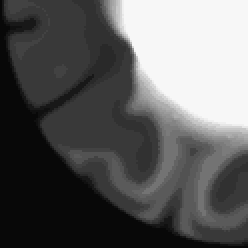

A Grayscale Image in Direct Graphics

The ZOOM procedure displays part of an image from the current window enlarged in a new (“zoom”) window. The cursor is used to mark the center of the zoom area, and different zoom factors can be specified interactively.
Note: ZOOM only works with color systems.
This routine is written in the IDL language. Its source code can be found in the file zoom.pro in the lib subdirectory of the IDL distribution.
After calling ZOOM, place the mouse cursor over an image in an IDL graphics window. Click the left mouse button to display a magnified version of the image in a new window. The zoomed image is centered around the pixel selected in the original window. Click the middle mouse button to display a menu of zoom factors. Click the right mouse button to exit the procedure.
Note that the ZOOM procedure is only for use with IDL graphics windows. It should not be used with draw widgets. To obtain a zooming effect in a draw widget, use the CW_ZOOM function.
ZOOM [, / CONTINUOUS ] [, FACT = integer ] [, / INTERP ] [, / KEEP ] [, / NEW_WINDOW ] [, XSIZE = value ] [, YSIZE = value ] [, ZOOM_WINDOW = variable ]
None
Set this keyword to make the zoom window track the mouse without requiring the user to press the left mouse button. This feature only works well on fast computers.
Use this keyword to specify the zoom factor, which must be an integer. The default zoom factor is 4.
Set this keyword to use bilinear interpolation. The default is to use pixel replication.
Set this keyword to keep the zoom window after exiting the procedure.
Normally, if ZOOM is called with KEEP and then called again, it will use the same window to display the new zoomed image. Set the NEW_WINDOW keyword to force ZOOM to create a new window for this purpose.
Use this keyword to specify the X size of the zoom window. The default is 512.
Use this keyword to specify the Y size of the zoom window. The default is 512.
Set this keyword to a named variable that will contain the index of the zoom window. KEEP must also be set. If KEEP is not set, ZOOM_WINDOW will contain the integer -1.
The following example imports a grayscale image from the convec.dat binary file. This grayscale image shows the convection of the Earth’s mantle. The image contains byte data values and is 248 pixels by 248 pixels. The ZOOM procedure, which is a Direct Graphics routine, is used to zoom in on the lower left corner of the image.
Example Code: See zooming_direct. pro in the examples/doc/image subdirectory of the IDL installation directory for code that duplicates this example. Run the example procedure by entering zooming_direct at the IDL command prompt or view the file in an IDL Editor window by entering .EDIT zooming_direct.pro .
| 1. | Determine the path to the convec.dat file: |
file = FILEPATH('convec.dat', $
SUBDIRECTORY = ['examples', 'data'])
| 2. | Initialize the image size parameter: |
imageSize = [248, 248]
| 3. | Import the image from the file: |
image = READ_BINARY(file, DATA_DIMS = imageSize)
| 4. | If you are running IDL on a TrueColor display, set the DECOMPOSED keyword to the DEVICE command to zero before your first color table related routine is used within an IDL session or program. |
DEVICE, DECOMPOSED = 0
| 5. | Load a grayscale color table: |
LOADCT, 0
| 6. | Create a window and display the original image with the TV procedure: |
WINDOW, 1, XSIZE = imageSize[0], YSIZE = imageSize[1], $
TITLE = 'A Grayscale Image'
TV, image
The following figure shows the resulting grayscale image display.
|
|
| 7. | Use the ZOOM Procedure to enlarge the lower left quarter of the image: |
ZOOM, /NEW_WINDOW, FACT = 2, $
XSIZE = imageSize[0], YSIZE = imageSize[1]
Click in the lower left corner of the original image window.
The following figure shows the resulting zoomed image.
|
 |
| 8. | Right-click in the original image window to quit out of the ZOOM procedure. |
|
Original |
Introduced |